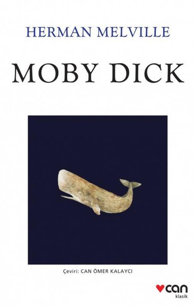
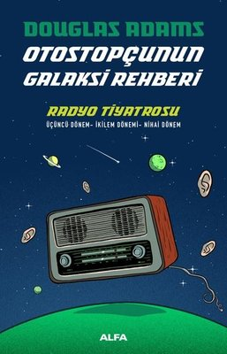
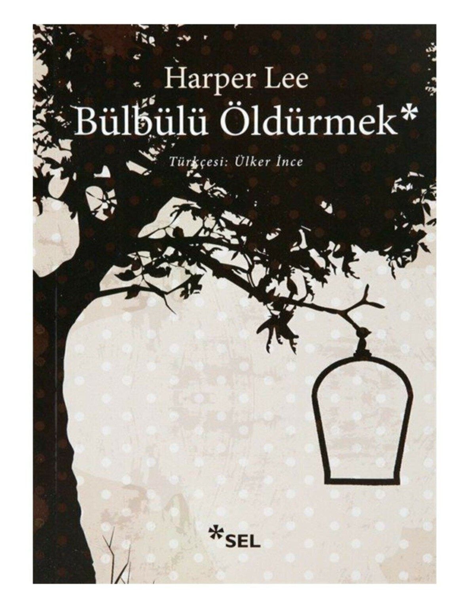
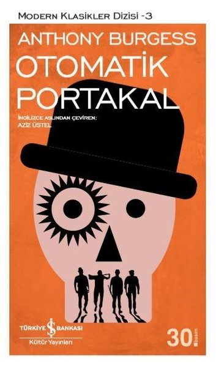
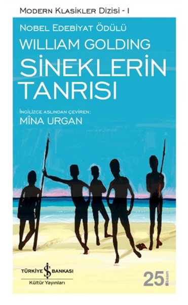
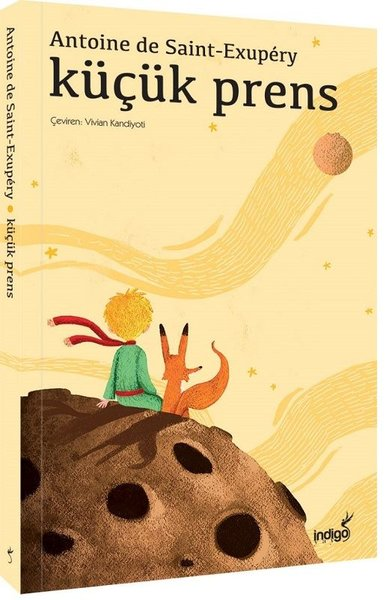
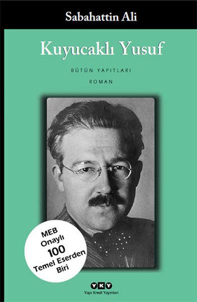

 Kitap özeti için tıklayınız  Kitap özeti için tıklayınız  Kitap özeti için tıklayınız  Kitap özeti için tıklayınız Kitap özeti için tıklayınız Kitap özeti için tıklayınız  Kitap özeti için tıklayınız  Kitap özeti için tıklayınız Kitap özeti için tıklayınız  Kitap özeti için tıklayınız